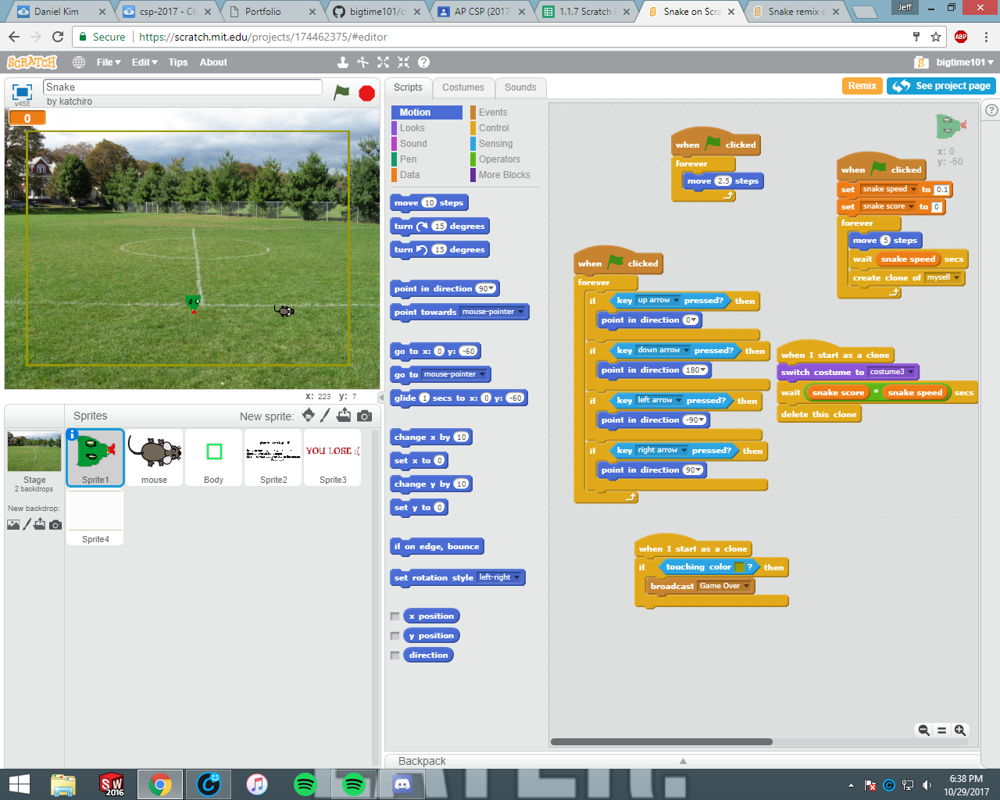
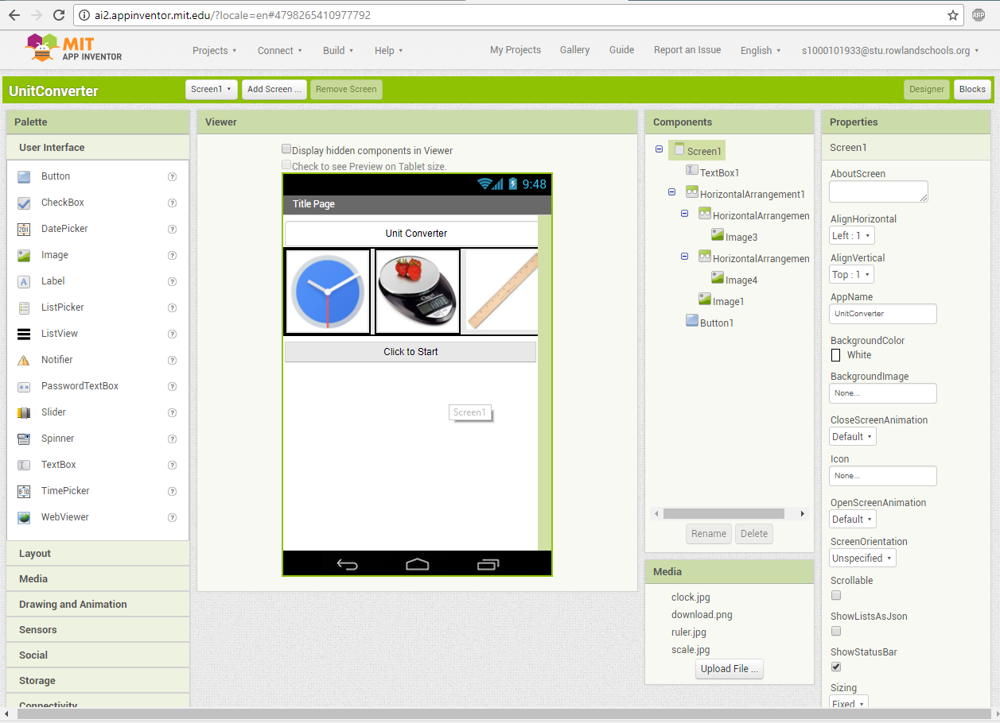

My partner, Michael Choi and I made a remix on a BeatBox Quartet Project by adding a new sprite that could be commanded by the spave bar to initiate sound and movement.
My partner, Michael Choi and I made our own game on Scratch.mit.edu called Snake. The objective of the game is to move around using only the left, right, up and down arrow keys to control then snake and eat the rat to grow bigger. If you make contact with the edge of the screen or with your body then you die. Have fun!
My partner Jefferson Ngo and I made an app through the use of the MIT2 app inventor. We created a unit converter app in hopes of being a service to our users. We aim to offer an educational tool to those who could use the extra assistance when converting the units of mass, length, and time.